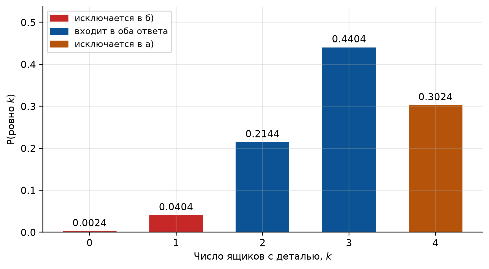
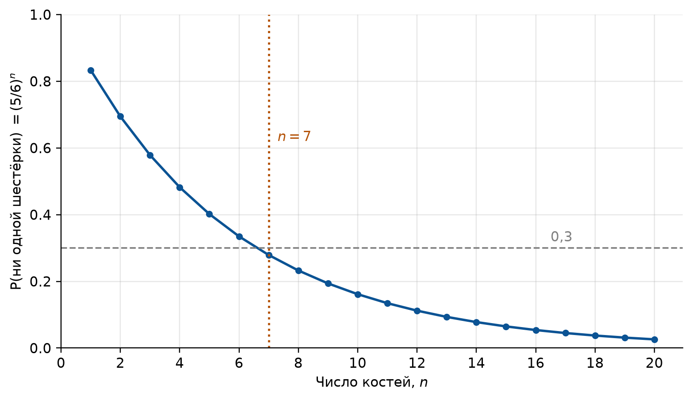
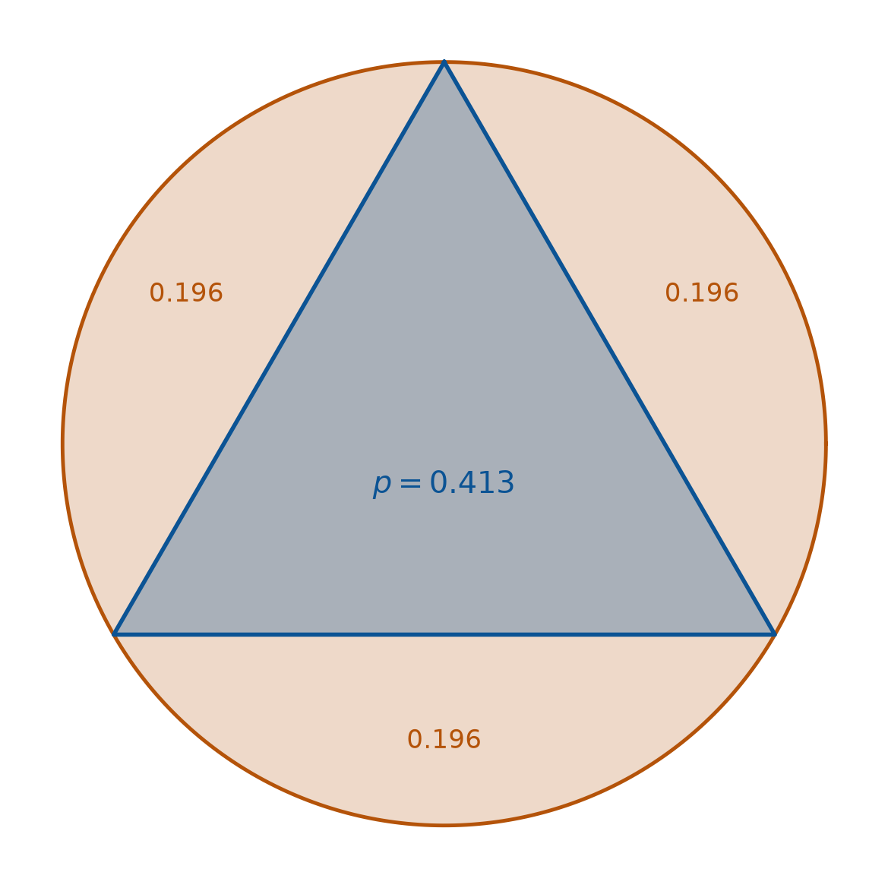
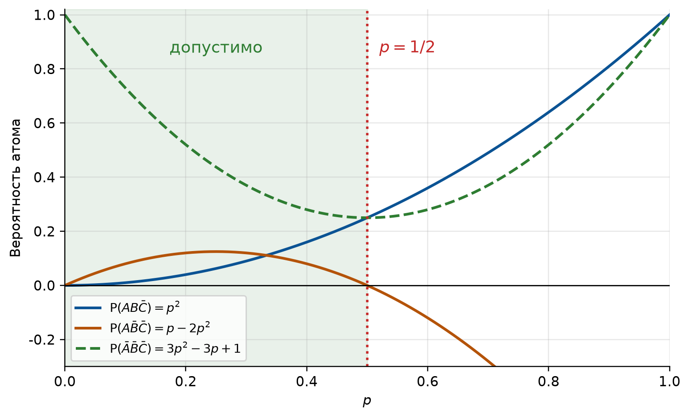

import numpy as np
import matplotlib.pyplot as plt
import sympy as sp
from fractions import Fraction as F
from itertools import permutations, product
from math import comb, log
# Оформление графиков: шрифт с кириллицей и палитра, различимая при печати
PALETTE = ["#0b5394", "#b45309", "#2e7d32", "#7b1fa2", "#c62828", "#00838f"]
plt.rcParams.update({
"font.family": "sans-serif",
"font.sans-serif": ["DejaVu Sans", "Liberation Sans", "Noto Sans", "sans-serif"],
"axes.unicode_minus": False,
"axes.prop_cycle": plt.cycler(color=PALETTE),
"axes.spines.top": False,
"axes.spines.right": False,
"axes.grid": True,
"grid.alpha": 0.3,
"figure.dpi": 110,
"figure.constrained_layout.use": True,
})
# Генератор случайных чисел с фиксированным зерном: результаты воспроизводимы
rng = np.random.default_rng(2026)
# Углы вершин правильного треугольника, вписанного в единичный круг
TRIANGLE_ANGLES = np.array([np.pi / 2, np.pi / 2 + 2 * np.pi / 3, np.pi / 2 + 4 * np.pi / 3])
def exactly_k(ps, k):
"""Вероятность того, что наступит ровно k из независимых событий с вероятностями ps.
Перебираются все наборы «наступило / не наступило» длины len(ps).
"""
total = 0.0
for mask in product([0, 1], repeat=len(ps)):
if sum(mask) == k:
pr = 1.0
for p, m in zip(ps, mask):
pr *= p if m else 1 - p
total += pr
return total
def region(x, y):
"""Номер области единичного круга, в которую попала точка (x, y).
0: вписанный треугольник; 1, 2, 3: сегменты за его сторонами.
"""
vx, vy = np.cos(TRIANGLE_ANGLES), np.sin(TRIANGLE_ANGLES)
inside = np.ones(len(x), dtype=bool)
seg = np.zeros(len(x), dtype=int)
for i in range(3):
j = (i + 1) % 3
# знак векторного произведения: точка справа от ребра i→j лежит вне треугольника
cross = (vx[j] - vx[i]) * (y - vy[i]) - (vy[j] - vy[i]) * (x - vx[i])
outside_edge = cross < 0
inside &= ~outside_edge
seg[outside_edge] = i + 1
return np.where(inside, 0, seg)
def prob_both(outcomes, weights, i, j):
"""P(события i и j наступили оба) в модели с конечным числом исходов.
outcomes: массив из 0 и 1 (строка: исход, столбец: событие),
weights: вероятности исходов.
"""
both = (outcomes[:, i] == 1) & (outcomes[:, j] == 1)
return float(weights[both].sum())1 Семинар 1. Теоремы сложения и умножения вероятностей
Теория вероятностей и математическая статистика · НИЯУ МИФИ
Скачать PDF-раздатку этого семинара
1.1 Код для этой главы
Все импорты и функции, которые используются в примерах главы, собраны в одной ячейке. Выполните её первой; остальные ячейки опираются на неё.
1.2 Краткая сводка
Операции над событиями. Сумма \(A + B\) (или \(A \cup B\)): наступило хотя бы одно из событий; произведение \(AB\) (или \(A \cap B\)): наступили оба; \(\bar{A}\): противоположное событие, \(\Prob(\bar A) = 1 - \Prob(A)\).
Теорема сложения. Для несовместных \(A\) и \(B\) \[ \Prob(A + B) = \Prob(A) + \Prob(B). \] В общем случае \[ \Prob(A + B) = \Prob(A) + \Prob(B) - \Prob(AB), \tag{1.1}\] а для трёх совместных событий \[ \Prob(A + B + C) = \Prob(A) + \Prob(B) + \Prob(C) - \Prob(AB) - \Prob(AC) - \Prob(BC) + \Prob(ABC). \tag{1.2}\]
Условная вероятность. При \(\Prob(A) > 0\) \[ \Prob(B \mid A) = \frac{\Prob(AB)}{\Prob(A)} \] (в учебнике Гмурмана она обозначается \(P_A(B)\)).
Теорема умножения. \[ \Prob(AB) = \Prob(A)\,\Prob(B \mid A) = \Prob(B)\,\Prob(A \mid B), \tag{1.3}\] и в общем виде: цепное правило \[ \Prob(A_1 A_2 \cdots A_n) = \Prob(A_1)\,\Prob(A_2 \mid A_1)\,\Prob(A_3 \mid A_1 A_2)\cdots \Prob(A_n \mid A_1 \cdots A_{n-1}). \]
Независимость. События \(A\) и \(B\) независимы, если \(\Prob(AB) = \Prob(A)\Prob(B)\); тогда \(\Prob(B \mid A) = \Prob(B)\). События \(A_1, \dots, A_n\) независимы в совокупности, если равенство \(\Prob(A_{i_1} \cdots A_{i_k}) = \Prob(A_{i_1}) \cdots \Prob(A_{i_k})\) выполняется для любого набора индексов. Попарной независимости для этого недостаточно; см. задачу 12.
Хотя бы одно событие. Если \(A_1, \dots, A_n\) независимы в совокупности и \(q_i = \Prob(\bar A_i)\), то \[ \Prob(\text{хотя бы одно из } A_i) = 1 - q_1 q_2 \cdots q_n. \tag{1.4}\] В частности, при одинаковых \(\Prob(A_i) = p\) имеем \(\Prob(A) = 1 - q^n\).
Уведомление
Несовместность и независимость: разные вещи. Если \(\Prob(A) > 0\), \(\Prob(B) > 0\) и события несовместны, то они обязательно зависимы: \(\Prob(AB) = 0 \ne \Prob(A)\Prob(B)\): наступление \(A\) полностью исключает \(B\).
1.3 Блок A. Разминка
1.3.1 Задача 1 (Гмурман, гл. 2 § 1, № 47)
В ящике 10 деталей, из которых четыре окрашены. Сборщик наудачу взял три детали. Найти вероятность того, что хотя бы одна из взятых деталей окрашена.
СоветРешение
Прямой путь: сложить вероятности «ровно одна», «ровно две», «ровно три»; он работает, но длинен. Проще перейти к противоположному событию \(\bar A\): ни одна из трёх деталей не окрашена, то есть все три взяты из шести неокрашенных: \[ \Prob(\bar A) = \frac{C_6^3}{C_{10}^3} = \frac{20}{120} = \frac16, \qquad \Prob(A) = 1 - \frac16 = \frac56 \approx 0{,}833. \]
Приём: вероятность события «хотя бы один» почти всегда удобнее считать через противоположное событие «ни одного».
Проверка: считаем обоими способами в точных дробях.
p_direct = sum(F(comb(4, k) * comb(6, 3 - k), comb(10, 3)) for k in (1, 2, 3))
p_compl = 1 - F(comb(6, 3), comb(10, 3))
print(f"напрямую: {p_direct} через дополнение: {p_compl} совпало: {p_direct == p_compl}")напрямую: 5/6 через дополнение: 5/6 совпало: True
ПредупреждениеТипичная ошибка
Путать «хотя бы одна» и «ровно одна». Вероятность «ровно одна окрашена» равна \(C_4^1 C_6^2 / C_{10}^3 = 1/2\): это только одно из трёх слагаемых.
1.3.2 Задача 2 (Гмурман, гл. 2 § 1, № 51)
Два стрелка стреляют по мишени. Вероятность попадания в мишень при одном выстреле для первого стрелка равна \(0{,}7\), а для второго равна \(0{,}8\). Найти вероятность того, что при одном залпе в мишень попадает только один из стрелков.
СоветРешение
Событие «попал только один» распадается на два несовместных: \(A_1\bar A_2\) (попал первый, промахнулся второй) и \(\bar A_1 A_2\). Стрелки независимы, поэтому \[ \Prob = p_1 q_2 + q_1 p_2 = 0{,}7 \cdot 0{,}2 + 0{,}3 \cdot 0{,}8 = 0{,}14 + 0{,}24 = 0{,}38. \]
Структура формулы: снаружи: сложение (слагаемые несовместны), внутри каждого слагаемого: умножение (стрелки независимы). Формула \(p_1 q_2 + q_1 p_2\) годится для любой пары независимых событий.
Проверка: формула и симуляция миллиона залпов.
p1, p2 = 0.7, 0.8
formula = p1 * (1 - p2) + (1 - p1) * p2
n = 1_000_000
hits = rng.random((n, 2)) < np.array([p1, p2])
sim = (hits.sum(axis=1) == 1).mean()
print(f"формула: {formula:.4f} симуляция ({n:,} залпов): {sim:.4f}")формула: 0.3800 симуляция (1,000,000 залпов): 0.37971.3.3 Задача 3 (Гмурман, гл. 2 § 1, № 68)
В урне имеется пять шаров с номерами от 1 до 5. Наудачу по одному извлекают три шара без возвращения. Найти вероятности следующих событий: а) последовательно появятся шары с номерами 1, 4, 5; б) извлечённые шары будут иметь номера 1, 4, 5 независимо от того, в какой последовательности они появились.
СоветРешение
а) Цепное правило Уравнение 1.3: вероятность вытащить первым шар № 1 равна \(1/5\); при условии, что он вытащен, вероятность вытащить вторым № 4 равна \(1/4\); далее \(1/3\): \[ \Prob = \frac15 \cdot \frac14 \cdot \frac13 = \frac{1}{60}. \]
б) Тот же набор годится в любом из \(3! = 6\) порядков, и все они несовместны: \[ \Prob = 6 \cdot \frac{1}{60} = \frac{1}{10}. \] Тот же ответ сразу через сочетания: \(1 / C_5^3 = 1/10\).
Разница между пунктами, ровно разница между размещениями и сочетаниями: «порядок важен» против «порядок не важен». Ответы отличаются в \(3!\) раз.
Проверка: полный перебор всех упорядоченных троек.
omega = list(permutations(range(1, 6), 3)) # все упорядоченные тройки
a = sum(o == (1, 4, 5) for o in omega)
b = sum(set(o) == {1, 4, 5} for o in omega)
print(f"|Ω| = {len(omega)}")
print(f"а) {F(a, len(omega))} б) {F(b, len(omega))} б)/а) = {b // a}")|Ω| = 60
а) 1/60 б) 1/10 б)/а) = 61.3.4 Задача 4 (Гмурман, гл. 2 § 2, № 82)
Для разрушения моста достаточно попадания одной авиационной бомбы. Найти вероятность того, что мост будет разрушен, если на него сбросить четыре бомбы, вероятности попадания которых соответственно равны: \(0{,}3\); \(0{,}4\); \(0{,}6\); \(0{,}7\).
СоветРешение
«Достаточно одного попадания»: это «хотя бы одно», а вероятности разные, так что нужна общая формула Уравнение 1.4: \[ \Prob(A) = 1 - q_1 q_2 q_3 q_4 = 1 - 0{,}7 \cdot 0{,}6 \cdot 0{,}4 \cdot 0{,}3 = 1 - 0{,}0504 = 0{,}9496. \]
В книге ответ округлён до \(0{,}95\).
Прямое суммирование по числу попаданий потребовало бы 15 слагаемых. Код считает оба варианта; результат один и тот же.
ps = [0.3, 0.4, 0.6, 0.7]
formula = 1 - np.prod([1 - p for p in ps])
direct = sum(exactly_k(ps, k) for k in range(1, 5)) # ровно 1 + ... + ровно 4
print(f"через дополнение: {formula:.4f} прямым суммированием: {direct:.4f}")через дополнение: 0.9496 прямым суммированием: 0.94961.4 Блок B. Основной
1.4.1 Задача 5 (Гмурман, гл. 2 § 1, № 57)
Вероятности того, что нужная сборщику деталь находится в первом, втором, третьем, четвёртом ящике, соответственно равны \(0{,}6\); \(0{,}7\); \(0{,}8\); \(0{,}9\). Найти вероятности того, что деталь содержится: а) не более чем в трёх ящиках; б) не менее чем в двух ящиках.
СоветРешение
Сумма данных вероятностей равна \(3\), так что это не распределение по ящикам и не полная группа. Речь о четырёх независимых событиях \(A_i\) = «деталь есть в \(i\)-м ящике»; деталей может быть несколько.
а) «Не более чем в трёх», дополнение к «во всех четырёх сразу»: \[ \Prob = 1 - p_1 p_2 p_3 p_4 = 1 - 0{,}6 \cdot 0{,}7 \cdot 0{,}8 \cdot 0{,}9 = 1 - 0{,}3024 = 0{,}6976. \]
б) «Не менее чем в двух», дополнение к объединению «ни в одном» и «ровно в одном»: \[ \Prob(0) = q_1 q_2 q_3 q_4 = 0{,}4 \cdot 0{,}3 \cdot 0{,}2 \cdot 0{,}1 = 0{,}0024, \] \[ \Prob(1) = 0{,}6 \cdot 0{,}3 \cdot 0{,}2 \cdot 0{,}1 + 0{,}4 \cdot 0{,}7 \cdot 0{,}2 \cdot 0{,}1 + 0{,}4 \cdot 0{,}3 \cdot 0{,}8 \cdot 0{,}1 + 0{,}4 \cdot 0{,}3 \cdot 0{,}2 \cdot 0{,}9 = 0{,}0404, \] \[ \Prob = 1 - 0{,}0024 - 0{,}0404 = 0{,}9572. \]
Проверка: полное распределение числа ящиков с деталью.
ps = [0.6, 0.7, 0.8, 0.9]
dist = [exactly_k(ps, k) for k in range(5)]
print("P(ровно k):", " ".join(f"{k}: {v:.4f}" for k, v in enumerate(dist)))
print(f"сумма = {sum(dist):.10f}")
print(f"а) не более трёх: {1 - dist[4]:.4f}")
print(f"б) не менее двух: {sum(dist[2:]):.4f}")P(ровно k): 0: 0.0024 1: 0.0404 2: 0.2144 3: 0.4404 4: 0.3024
сумма = 1.0000000000
а) не более трёх: 0.6976
б) не менее двух: 0.9572Оба ответа: это распределение с отрезанными хвостами (Рисунок 1.1).
fig, ax = plt.subplots(figsize=(7, 3.8))
colors = ["#c62828", "#c62828", "#0b5394", "#0b5394", "#b45309"]
ax.bar(range(5), dist, color=colors, width=0.62)
for k, v in enumerate(dist):
ax.text(k, v + 0.012, f"{v:.4f}", ha="center", fontsize=10)
ax.set_xlabel("Число ящиков с деталью, $k$")
ax.set_ylabel("$\\mathsf{P}$(ровно $k$)")
ax.set_xticks(range(5))
ax.set_ylim(0, max(dist) * 1.22)
ax.legend(
handles=[
plt.Rectangle((0, 0), 1, 1, color="#c62828"),
plt.Rectangle((0, 0), 1, 1, color="#0b5394"),
plt.Rectangle((0, 0), 1, 1, color="#b45309"),
],
labels=["исключается в б)", "входит в оба ответа", "исключается в а)"],
fontsize=9, loc="upper left",
)
plt.show()
ПредупреждениеТипичная ошибка
Считать четыре числа распределением и делить их на сумму \(3\). Независимые события и полная группа несовместных событий, разные конструкции: у первых сумма вероятностей может быть любой, у второй она равна \(1\).
1.4.2 Задача 6 (Гмурман, гл. 2 § 1, № 59)
Брошены три игральные кости. Найти вероятности следующих событий: а) на двух выпавших гранях появится одно очко, а на третьей грани появится другое число очков; б) на двух выпавших гранях появится одинаковое число очков, а на третьей грани появится другое число очков; в) на всех выпавших гранях появится разное число очков.
СоветРешение
Все \(6^3 = 216\) упорядоченных исходов равновозможны.
а) Выбираем, какие две кости дали единицу: \(C_3^2 = 3\) способа; третья принимает любое из 5 оставшихся значений: \[ \Prob = \frac{3 \cdot 5}{216} = \frac{15}{216} = \frac{5}{72} \approx 0{,}069. \]
б) То же, но повторяющееся значение, любое из шести: \[ \Prob = \frac{6 \cdot 3 \cdot 5}{216} = \frac{90}{216} = \frac{5}{12} \approx 0{,}417. \]
в) Все три различны: \(6 \cdot 5 \cdot 4 = 120\) исходов, \[ \Prob = \frac{120}{216} = \frac59 \approx 0{,}556. \]
Проверка полной группой. События «все три одинаковы», «ровно две одинаковы», «все разные» несовместны и исчерпывают все исходы: \[ \frac{6}{216} + \frac{90}{216} + \frac{120}{216} = 1. \]
Проверка: полный перебор 216 исходов.
omega = list(product(range(1, 7), repeat=3))
n = len(omega)
a = sum(sorted(o).count(1) == 2 and len(set(o)) == 2 for o in omega)
b = sum(len(set(o)) == 2 for o in omega)
c = sum(len(set(o)) == 3 for o in omega)
same = sum(len(set(o)) == 1 for o in omega)
print(f"а) {F(a, n)} б) {F(b, n)} в) {F(c, n)}")
print(f"полная группа: {F(same, n)} + {F(b, n)} + {F(c, n)} = {F(same + b + c, n)}")а) 5/72 б) 5/12 в) 5/9
полная группа: 1/36 + 5/12 + 5/9 = 1
ПредупреждениеТипичная ошибка
В пункте б) теряют множитель \(6\): выбор того значения, которое повторяется. Проверка полной группой ловит такую ошибку сразу: сумма перестаёт быть равной \(1\).
1.4.3 Задача 7 (Гмурман, гл. 2 § 1, № 60)
Сколько надо бросить игральных костей, чтобы с вероятностью, меньшей \(0{,}3\), можно было ожидать, что ни на одной из выпавших граней не появится шесть очков?
СоветРешение
Решение Гмурмана (с. 22). Пусть \(A\): ни на одной грани нет шестёрки, \(A_i\): на \(i\)-й кости нет шестёрки. Тогда \(A = A_1 A_2 \cdots A_n\), \(\Prob(A_i) = 5/6\), события независимы в совокупности, поэтому \[ \Prob(A) = \left(\frac56\right)^n. \] По условию \((5/6)^n < 0{,}3\), откуда \(n \log(5/6) < \log 0{,}3\). Так как \(\log(5/6) < 0\), при делении знак неравенства меняется: \[ n > \frac{\log 0{,}3}{\log(5/6)} \approx 6{,}6, \qquad n \geqslant 7. \]
Проверка: граница из логарифмов и прямой подбор \(n\).
threshold = 0.3
n_exact = log(threshold) / log(5 / 6)
n_min = min(k for k in range(1, 100) if (5 / 6) ** k < threshold)
print(f"граница: n > {n_exact:.4f} → n_min = {n_min}")
print(f"проверка: (5/6)^6 = {(5/6)**6:.4f} ≥ 0.3, (5/6)^7 = {(5/6)**7:.4f} < 0.3")граница: n > 6.6036 → n_min = 7
проверка: (5/6)^6 = 0.3349 ≥ 0.3, (5/6)^7 = 0.2791 < 0.3n_grid = np.arange(1, 21)
p_grid = (5 / 6) ** n_grid
fig, ax = plt.subplots(figsize=(7, 4))
ax.plot(n_grid, p_grid, marker="o", ms=4, lw=1.8)
ax.axhline(threshold, color="gray", ls="--", lw=1.2)
ax.axvline(n_min, color="#b45309", ls=":", lw=1.6)
ax.text(n_min + 0.3, 0.62, f"$n = {n_min}$", color="#b45309")
ax.text(16.5, threshold + 0.02, "0,3", color="gray")
ax.set_xlabel("Число костей, $n$")
ax.set_ylabel("$\\mathsf{P}$(ни одной шестёрки) $= (5/6)^n$")
ax.set_xticks(range(0, 21, 2))
ax.set_ylim(0, 1)
plt.show()
ПредупреждениеТипичная ошибка
Забыть сменить знак неравенства при делении на \(\log(5/6) < 0\). Тогда получается бессмысленный ответ \(n \leqslant 6\).
УведомлениеДля самопроверки (Гмурман, № 61)
Вероятность попадания в мишень стрелком при одном выстреле равна \(0{,}8\). Сколько выстрелов должен произвести стрелок, чтобы с вероятностью, меньшей \(0{,}4\), можно было ожидать, что не будет ни одного промаха? Ответ: \(n \geqslant 5\).
1.4.4 Задача 8 (Гмурман, гл. 2 § 2, № 86)
Вероятность хотя бы одного попадания стрелком в мишень при трёх выстрелах равна \(0{,}875\). Найти вероятность попадания при одном выстреле.
СоветРешение
Решение Гмурмана (с. 30). Это обратная задача к формуле Уравнение 1.4. Пусть \(q\): вероятность промаха при одном выстреле; выстрелы независимы, вероятности одинаковы, поэтому \[ \Prob(A) = 1 - q^3 = 0{,}875 \;\Longrightarrow\; q^3 = 0{,}125 \;\Longrightarrow\; q = \sqrt[3]{0{,}125} = 0{,}5, \] и искомая вероятность \(p = 1 - q = 0{,}5\).
Проверка: вычисляем \(p\) и подставляем обратно.
q = (1 - 0.875) ** (1 / 3)
p = 1 - q
print(f"q = {q:.4f} p = {p:.4f} обратная подстановка: 1 - q^3 = {1 - q**3:.4f}")q = 0.5000 p = 0.5000 обратная подстановка: 1 - q^3 = 0.8750
УведомлениеДля самопроверки (Гмурман, № 87)
Вероятность хотя бы одного попадания в цель при четырёх выстрелах равна \(0{,}9984\). Найти вероятность попадания в цель при одном выстреле. Ответ: \(0{,}8\).
1.5 Блок C. Повышенная сложность
1.5.1 Задача 9 (Гмурман, гл. 2 § 1, № 62)
В круг радиуса \(R\) вписан правильный треугольник. Внутрь круга наудачу брошены четыре точки. Найти вероятности следующих событий: а) все четыре точки попадут внутрь треугольника; б) одна точка попадёт внутрь треугольника и по одной точке попадёт на каждый «малый» сегмент. Предполагается, что вероятность попадания точки в фигуру пропорциональна площади фигуры и не зависит от её расположения.
СоветРешение
Задача соединяет геометрическую вероятность (для одной точки) с теоремой умножения (для четырёх независимых точек).
Одна точка. Сторона вписанного правильного треугольника равна \(R\sqrt3\), его площадь \(S_\triangle = \tfrac{3\sqrt3}{4}R^2\), площадь круга \(\pi R^2\): \[ p = \frac{S_\triangle}{S_\circ} = \frac{3\sqrt3}{4\pi} \approx 0{,}4135. \] Три «малых» сегмента одинаковы и делят между собой остаток круга: \[ s = \frac{1 - p}{3} = \frac{4\pi - 3\sqrt3}{12\pi} \approx 0{,}1955. \]
а) Точки бросаются независимо, поэтому вероятности перемножаются: \[ \Prob = p^4 = \left(\frac{3\sqrt3}{4\pi}\right)^{4} \approx 0{,}0292. \]
б) Четыре точки различимы, и их надо разложить по четырём областям (треугольник и три сегмента) по одной в каждую: это \(4! = 24\) способа, каждый вероятности \(p\,s^3\): \[ \Prob = 4!\,p\,s^3 = 4! \cdot \frac{3\sqrt3}{4\pi} \left(\frac{4\pi - 3\sqrt3}{12\pi}\right)^{3} \approx 0{,}0742. \]
Проверка: символьный расчёт в sympy.
p_sym = 3 * sp.sqrt(3) / (4 * sp.pi)
s_sym = (1 - p_sym) / 3
s_book = (4 * sp.pi - 3 * sp.sqrt(3)) / (12 * sp.pi)
print("наша форма сегмента совпадает с книжной:", sp.simplify(s_sym - s_book) == 0)
print(f"p = {float(p_sym):.5f} s = {float(s_sym):.5f} p + 3s = {float(p_sym + 3*s_sym):.5f}")
print(f"а) {float(p_sym**4):.5f}")
print(f"б) {float(24 * p_sym * s_sym**3):.5f} без 4!: {float(p_sym * s_sym**3):.5f}")наша форма сегмента совпадает с книжной: True
p = 0.41350 s = 0.19550 p + 3s = 1.00000
а) 0.02923
б) 0.07415 без 4!: 0.00309Проверка симуляцией: бросаем точки равномерно в круг и определяем функцией region, в какую из четырёх областей попала каждая.
m = 500_000
# равномерно в единичном круге: радиус как корень из равномерной величины
r = np.sqrt(rng.random((m, 4)))
th = rng.uniform(0, 2 * np.pi, (m, 4))
reg = region((r * np.cos(th)).ravel(), (r * np.sin(th)).ravel()).reshape(m, 4)
sim_a = (reg == 0).all(axis=1).mean()
sim_b = (np.sort(reg, axis=1) == np.array([0, 1, 2, 3])).all(axis=1).mean()
print(f"а) симуляция {sim_a:.5f} против {float(p_sym**4):.5f}")
print(f"б) симуляция {sim_b:.5f} против {float(24 * p_sym * s_sym**3):.5f}")а) симуляция 0.02944 против 0.02923
б) симуляция 0.07420 против 0.07415vx, vy = np.cos(TRIANGLE_ANGLES), np.sin(TRIANGLE_ANGLES)
fig, ax = plt.subplots(figsize=(5.2, 5.2))
t = np.linspace(0, 2 * np.pi, 400)
ax.fill(np.cos(t), np.sin(t), color="#b45309", alpha=0.22)
ax.plot(np.cos(t), np.sin(t), color="#b45309", lw=1.6)
ax.fill(vx, vy, color="#0b5394", alpha=0.30)
ax.plot(np.append(vx, vx[0]), np.append(vy, vy[0]), color="#0b5394", lw=1.8)
ax.text(0, -0.13, f"$p = {float(p_sym):.3f}$", ha="center", color="#0b5394", fontsize=13)
for i in range(3):
mid = (TRIANGLE_ANGLES[i] + TRIANGLE_ANGLES[(i + 1) % 3]) / 2
mid = mid if i < 2 else mid + np.pi
ax.text(0.78 * np.cos(mid), 0.78 * np.sin(mid), f"{float(s_sym):.3f}",
ha="center", va="center", color="#b45309", fontsize=11)
ax.set_aspect("equal")
ax.axis("off")
ax.set_xlim(-1.12, 1.12)
ax.set_ylim(-1.12, 1.12)
plt.show()
ПредупреждениеТипичная ошибка
Потерять множитель \(4!\) в пункте б). Без него получается \(0{,}0031\): ответ в 24 раза меньше верного. Множитель нужен, потому что точки различимы: важно, какая именно точка попала в треугольник, а какая попала в каждый сегмент.
1.5.2 Задача 10 (Гмурман, гл. 2 § 1, № 75)
Наступление события \(AB\) необходимо влечёт наступление события \(C\). Доказать, что \[ \Prob(A) + \Prob(B) - \Prob(C) \leqslant 1. \]
СоветРешение
Решение Гмурмана (с. 25). Если \(AB\) влечёт \(C\), то \(C\) содержит \(AB\), и поэтому \[ \Prob(C) \geqslant \Prob(AB). \tag{$*$} \] Разложим \(A\) и \(B\) на несовместные части: \[ \Prob(A) = \Prob(AB) + \Prob(A\bar B), \qquad \Prob(B) = \Prob(AB) + \Prob(\bar A B). \] Три события \(AB\), \(A\bar B\), \(\bar A B\) несовместны, а вместе с \(\bar A \bar B\) образуют полную группу: \[ \Prob(AB) + \Prob(A\bar B) + \Prob(\bar A B) = 1 - \Prob(\bar A \bar B). \] Подставляя и пользуясь \((*)\): \[ \Prob(A) + \Prob(B) - \Prob(C) \leqslant \Prob(AB) + \Prob(A\bar B) + \Prob(AB) + \Prob(\bar A B) - \Prob(AB) \] \[ = \Prob(AB) + \Prob(A\bar B) + \Prob(\bar A B) = 1 - \Prob(\bar A \bar B) \leqslant 1. \qquad \blacksquare \]
Частный случай. При \(C = AB\) получается \[ \Prob(A) + \Prob(B) - \Prob(AB) \leqslant 1, \] то есть просто \(\Prob(A + B) \leqslant 1\) по Уравнение 1.1. Это неравенство используется в задаче 11.
Ключевой приём: разложение \(A = AB + A\bar B\) на несовместные части.
Численная проверка: берём 300 000 случайных распределений на четырёх атомах \((AB,\, A\bar B,\, \bar A B,\, \bar A \bar B)\) и проверяем неравенство в худшем случае \(C = AB\) (при большем \(C\) левая часть только уменьшится).
w = rng.dirichlet(np.ones(4), size=300_000) # P(AB), P(AB̄), P(ĀB), P(ĀB̄)
P_AB, P_Ab, P_aB, P_ab = w.T
PA, PB = P_AB + P_Ab, P_AB + P_aB
lhs = PA + PB - P_AB # худший случай C = AB
print(f"максимум левой части: {lhs.max():.6f} нарушений: {(lhs > 1 + 1e-12).sum()}")
print(f"совпадает с 1 - P(ĀB̄): {np.allclose(lhs, 1 - P_ab)}")максимум левой части: 1.000000 нарушений: 0
совпадает с 1 - P(ĀB̄): True1.5.3 Задача 11 (Гмурман, гл. 2 § 1, № 76)
Доказать, что \[ \Prob(B \mid A) \geqslant 1 - \frac{\Prob(\bar B)}{\Prob(A)}. \] Предполагается, что \(\Prob(A) > 0\).
СоветРешение
Решение Гмурмана (с. 26). Воспользуемся неравенством из задачи 10: \(\Prob(A) + \Prob(B) - \Prob(AB) \leqslant 1\). Подставим в него \(\Prob(AB) = \Prob(A)\Prob(B \mid A)\) и \(\Prob(B) = 1 - \Prob(\bar B)\): \[ \Prob(A) + 1 - \Prob(\bar B) - \Prob(A)\,\Prob(B \mid A) \leqslant 1, \] откуда \[ \Prob(A)\,\Prob(B \mid A) \geqslant \Prob(A) - \Prob(\bar B). \] Разделив на \(\Prob(A) > 0\): \[ \Prob(B \mid A) \geqslant 1 - \frac{\Prob(\bar B)}{\Prob(A)}. \qquad \blacksquare \]
Смысл. Если \(B\) почти достоверно (\(\Prob(\bar B)\) мало), то \(B\) остаётся почти достоверным и при условии любого не слишком редкого \(A\). Оценка содержательна лишь при \(\Prob(\bar B) < \Prob(A)\); иначе правая часть отрицательна и неравенство выполняется автоматически. Равенство достигается, когда \(\Prob(\bar A \bar B) = 0\), то есть событие \(A + B\) достоверно.
Численная проверка на тех же случайных распределениях, что в задаче 10.
lhs = P_AB / PA # P(B | A), переменные из задачи 10
rhs = 1 - (1 - PB) / PA
gap = lhs - rhs
print(f"минимальный запас lhs - rhs: {gap.min():.3e} нарушений: {(gap < -1e-12).sum()}")
print(f"случаев, где оценка содержательна (rhs > 0): {(rhs > 0).mean():.1%}")минимальный запас lhs - rhs: 1.686e-07 нарушений: 0
случаев, где оценка содержательна (rhs > 0): 50.0%1.5.4 Задача 12 (Гмурман, гл. 2 § 1, № 79*)
Даны три попарно независимых события \(A\), \(B\), \(C\), которые, однако, все три вместе произойти не могут. Предполагая, что все они имеют одну и ту же вероятность \(p\), найти наибольшее возможное значение \(p\).
СоветРешение
По условию \[ \Prob(A) = \Prob(B) = \Prob(C) = p, \qquad \Prob(AB) = \Prob(AC) = \Prob(BC) = p^2, \qquad \Prob(ABC) = 0. \] Здесь \(\Prob(ABC) = 0 \ne p^3\): события попарно независимы, но не независимы в совокупности.
Короткий путь. Разложим \(A\bar B\) на несовместные части: \(A\bar B = A\bar B C + A\bar B\bar C\), откуда \[ \Prob(A\bar B\bar C) = \Prob(A\bar B) - \Prob(A\bar B C). \] Здесь \(\Prob(A\bar B) = p - p^2\) (попарная независимость \(A\) и \(B\)), а \(\Prob(A\bar BC) = \Prob(AC) - \Prob(ABC) = p^2 - 0 = p^2\). Значит, \[ \Prob(A\bar B\bar C) = p - p^2 - p^2 = p - 2p^2 = p(1 - 2p). \] Вероятность неотрицательна, поэтому \(p(1 - 2p) \geqslant 0\), то есть \[ \boxed{p \leqslant \tfrac12.} \] Значение достижимо: при \(p = 1/2\) получаем \(\Prob(A\bar B\bar C) = 0\), и непротиворечивая модель существует (см. ниже).
Полный набор атомов (разбор Гмурмана, с. 27–28). Все восемь вероятностей выражаются через \(p\):
| Атом | Вероятность | При \(p = 1/2\) |
|---|---|---|
| \(ABC\) | \(0\) | \(0\) |
| \(AB\bar C\), \(A\bar BC\), \(\bar ABC\) | \(p^2\) | \(1/4\) |
| \(A\bar B\bar C\), \(\bar AB\bar C\), \(\bar A\bar BC\) | \(p - 2p^2\) | \(0\) |
| \(\bar A\bar B\bar C\) | \(3p^2 - 3p + 1\) | \(1/4\) |
Требование неотрицательности всех восьми даёт систему неравенств; самое жёсткое из них: \(p - 2p^2 \geqslant 0\).
Проверка: сумма атомов и область неотрицательности в sympy.
p_s = sp.symbols("p", nonnegative=True)
atoms = {
"ABC": sp.Integer(0),
"AB̄C̄ (и симметричные)": p_s - 2 * p_s**2,
"ABC̄ (и симметричные)": p_s**2,
"ĀB̄C̄": 3 * p_s**2 - 3 * p_s + 1,
}
total = (atoms["ABC"] + 3 * atoms["ABC̄ (и симметричные)"]
+ 3 * atoms["AB̄C̄ (и симметричные)"] + atoms["ĀB̄C̄"])
print("сумма восьми атомов:", sp.simplify(total))
for name, expr in atoms.items():
print(f" {name:26s} {expr} ≥0 при {sp.solve([sp.Ge(expr, 0), sp.Le(p_s, 1)], p_s)}")
print("\nмаксимум p:", sp.Rational(1, 2))сумма восьми атомов: 1
ABC 0 ≥0 при p <= 1
AB̄C̄ (и симметричные) -2*p**2 + p ≥0 при p <= 1/2
ABC̄ (и симметричные) p**2 ≥0 при p <= 1
ĀB̄C̄ 3*p**2 - 3*p + 1 ≥0 при p <= 1
максимум p: 1/2Модель при \(p = 1/2\): четыре равновероятных исхода, три из них дают ровно по два события из трёх, а четвёртый не даёт ни одного.
# исходы (A, B, C): три пары и «ничего», каждый с вероятностью 1/4
M = np.array([(1, 1, 0), (1, 0, 1), (0, 1, 1), (0, 0, 0)])
w4 = np.full(4, 0.25)
PA_, PB_, PC_ = (M * w4[:, None]).sum(axis=0)
pairs = [(0, 1), (0, 2), (1, 2)]
triple = float(w4[(M == 1).all(axis=1)].sum())
print(f"P(A), P(B), P(C) = {PA_}, {PB_}, {PC_}")
print("P(AB), P(AC), P(BC) =", [prob_both(M, w4, i, j) for i, j in pairs], " p² =", 0.5**2)
print("попарная независимость:", all(abs(prob_both(M, w4, i, j) - 0.25) < 1e-12 for i, j in pairs))
print(f"P(ABC) = {triple}, но p³ = {0.5**3} → в совокупности НЕ независимы")P(A), P(B), P(C) = 0.5, 0.5, 0.5
P(AB), P(AC), P(BC) = [0.25, 0.25, 0.25] p² = 0.25
попарная независимость: True
P(ABC) = 0.0, но p³ = 0.125 → в совокупности НЕ независимыgrid = np.linspace(0, 1, 400)
curves = {
"$\\mathsf{P}(AB\\bar C) = p^2$": grid**2,
"$\\mathsf{P}(A\\bar B\\bar C) = p - 2p^2$": grid - 2 * grid**2,
"$\\mathsf{P}(\\bar A\\bar B\\bar C) = 3p^2 - 3p + 1$": 3 * grid**2 - 3 * grid + 1,
}
fig, ax = plt.subplots(figsize=(7, 4.2))
for (label, y), st in zip(curves.items(), ["-", "-", "--"]):
ax.plot(grid, y, st, lw=2, label=label)
ax.axhline(0, color="black", lw=0.9)
ax.axvspan(0, 0.5, color="#2e7d32", alpha=0.10)
ax.axvline(0.5, color="#c62828", ls=":", lw=1.8)
ax.text(0.25, 0.86, "допустимо", ha="center", color="#2e7d32", fontsize=12)
ax.text(0.52, 0.86, "$p = 1/2$", color="#c62828", fontsize=12)
ax.set_xlabel("$p$")
ax.set_ylabel("Вероятность атома")
ax.set_xlim(0, 1)
ax.set_ylim(-0.3, 1.02)
ax.legend(fontsize=9, loc="lower left")
plt.show()
ПредупреждениеТипичная ошибка
Считать, что из попарной независимости следует \(\Prob(ABC) = \Prob(A)\Prob(B)\Prob(C) = p^3\). Тогда из \(\Prob(ABC) = 0\) вышло бы \(p = 0\). Попарная независимость не даёт независимости в совокупности: именно это и показывает задача.
1.6 Задачи для самостоятельной работы
- (Гмурман, № 70.) В мешочке 10 одинаковых кубиков с номерами от 1 до 10. Наудачу извлекают по одному три кубика. Найти вероятность того, что последовательно появятся кубики с номерами 1, 2, 3, если кубики извлекаются: а) без возвращения; б) с возвращением. Сравните ответы и объясните, какой из них больше и почему.
- (Гмурман, № 63.) Отрезок разделён на три равные части. На него наудачу брошены три точки. Найти вероятность того, что на каждую из трёх частей попадёт по одной точке.
- (Гмурман, № 77.) Наступление события \(ABC\) необходимо влечёт наступление события \(D\). Доказать, что \(\Prob(A) + \Prob(B) + \Prob(C) - \Prob(D) \leqslant 2\).
- (Гмурман, № 88.) Вероятность ошибки при одном измерении равна \(p\). Найти наименьшее число измерений, при котором с вероятностью, большей \(\alpha\), хотя бы один результат окажется неверным.
СоветОтветы
- а) \(1/720\); б) \(0{,}001\). Без возвращения вероятность больше: повторы исключены, и исходов меньше.
- \(3!\,(1/3)^3 = 2/9\).
- Доказательство по схеме задачи 10, но с восемью атомами для трёх событий.
- \(n_{\min} = \lfloor \ln(1-\alpha)/\ln(1-p) \rfloor + 1\). Проверка: при \(\alpha = 0{,}7\), \(p = 1/6\) получается \(n = 7\): ответ задачи 7.